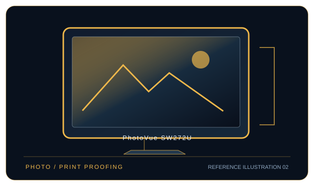

[ INDIVIDUAL COMPONENT // DISPLAYS ]
BenQ PhotoVue SW272U
27-inch 4K photographer LCD with wide-gamut hardware calibration and 90 W USB-C.

IDENTIFICATION: BenQ model PhotoVue SW272U. Confirm the full rear-label model, region and hardware revision; published capabilities can differ by firmware, input board and bundle.
Specifications
| Catalog subcategory | Professional displays |
|---|---|
| Exact model / panel | 27-inch IPS LCD, Nano Matte coating |
| Native resolution | 3840 × 2160 (4K UHD, 16:9) |
| Refresh rate | Up to 60 Hz at native resolution |
| Color gamut | 99% Adobe RGB, 99% P3, 100% sRGB and 100% Rec.709 (manufacturer stated) |
| Calibration features | Hardware calibration supported by Palette Master Ultimate with an external supported colorimeter; 16-bit 3D LUT, factory calibration report, Paper Color Sync and selectable color modes. |
| Inputs / companion ports | DisplayPort 1.4, HDMI 2.0 × 2, USB-C with DP Alt Mode and up to 90 W power delivery; USB hub and card reader. USB-C video requires host DP Alt Mode. |
| VESA / mounting | 100 × 100 mm VESA mount; hood/stand clearance can affect arm placement. |
| Power | AC 100–240 V; typical 34 W, maximum 200 W; USB-C host charging up to 90 W is separate from panel draw. |
Compatibility and deployment
Works as a 4K/60 Hz display over DP 1.4, HDMI 2.0 or DP Alt Mode USB-C. For hardware calibration, attach a supported colorimeter and use BenQ Palette Master Ultimate; USB-C data/video features require the monitor USB upstream link. Check GPU bandwidth and HDR/color mode compatibility.
Preservation notes
Record the complete rear-label SKU, serial/date code, installed firmware and options, calibration report, supported signal timing, tested source and cable, mounting hardware, regional AC rating and image condition. Keep the original hood/stand and model-specific setup documentation with the display; use trained service personnel for internal work.
Manufacturer documentation and references
- BenQ — SW272U technical specificationsManufacturer product or specification reference for model identification and published capabilities.
- BenQ — SW272U manuals and downloadsManufacturer support, user guide or product-specific documentation.